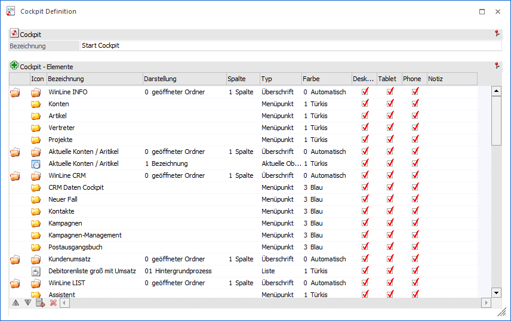
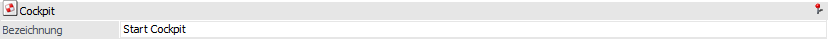
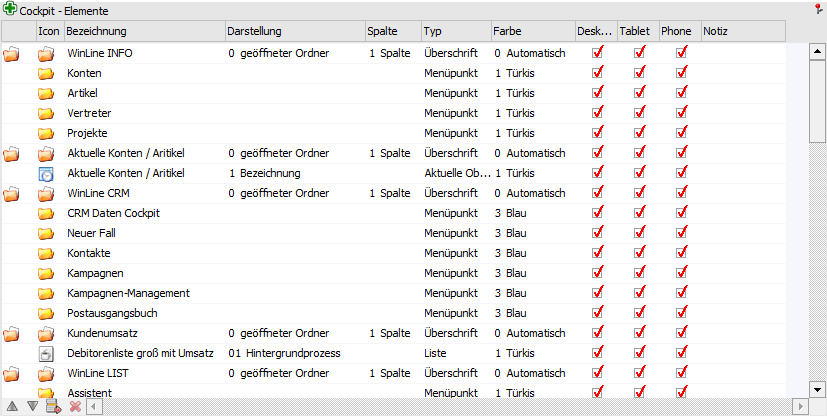
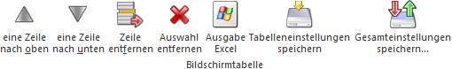
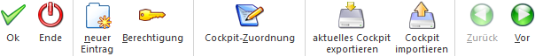
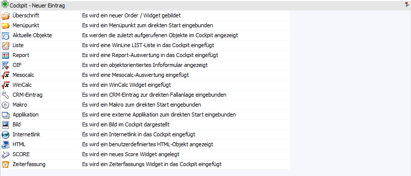

Im Fenster "Cockpit Definition", welches über den Cockpit-Ribbon (Button "Cockpit-Definition") oder das Programm "Cockpit-Zuordnung" (Button "Cockpit bearbeiten") aufgerufen wird, erfolgt die Definition des Cockpits.

Cockpit

Ø Name
An dieser Stelle kann der Name des Cockpits vergeben werden. Zusätzlich kann mit Hilfe der Taste F9 der Inhalt eines bestehenden Cockpits kopiert werden.
Tabelle "Cockpit - Elemente"

In der Tabelle werden alle Einträge dargestellt, welche für das Cockpit bereits definiert wurden. Die Neuanlage von Einträgen erfolgt mit Hilfe des Buttons "neuer Eintrag" oder durch Anwahl einer leeren Zeile in der Tabelle "Cockpit - Elemente".
Hinweis
Grundsätzlich kann die Anordnung der Elemente über die Tabellenbuttons oder per Drag & Drop erfolgen. Zusätzlich besteht die Möglichkeit per Drag & Drop + STRG-Taste einen Eintrag zu kopieren.
In der Tabelle können bestehende Einträge auch verändert werden, wobei es folgende Möglichkeiten gibt:
Ø Icon
An dieser Stelle wird das Icon des Eintrags dargestellt. Per Doppelklick auf das Icon wird eine Symbol-Auswahl geöffnet und das Icon für die Anzeige im Cockpit kann gewählt werden.
Ø Bezeichnung
In dieser Spalte wird die Bezeichnung des Eintrags dargestellt.
Ø Darstellung
Je nach Element kann an dieser Stelle die Art der Darstellung definiert werden.
Ø Spalte
Bei den Überschriften kann die Spalte, in welcher der Eintrag dargestellt werden soll, verändert werden (ein Wert zwischen 1 und 3).
Ø Typ
Hier wird der jeweilige Typ des Eintrags angezeigt. Dieser Typ dient nur zur Information und kann nicht verändert werden (da im Zuge der Anlage festgelegt).
Ø Farbe
Die Farbe des Cockpit-Icons richtet sich nach dem Anfangsbuchstaben der Bezeichnung des jeweiligen Eintrags. Diese Logik kann an dieser Stelle mit Hilfe einer Auswahlbox übersteuert werden. Folgende Varianten stehen zur Auswahl:
ü 0 - Automatisch (Standard)
ü 1 - Türkis
ü 2 - Grün
ü 3 - Blau
ü 4 - Violett
ü 5 - Gelb
ü 6 - Orange
ü 7 - Rot
Ø Spalten "Desktop / Tablet / Phone"
Per Checkbox kann definiert werden, welche Cockpit-Elemente auf welchem Device (Endgerät) angezeigt werden sollen.
Hinweis
Wenn bei einer Überschrift die Option entfernt wird, dann werden bei allen darunterliegenden Einträgen automatisch die Checkboxen deaktiviert.
Ø Notiz
In dieser Spalte kann eine Notiz (z.B. nähere Beschreibung des Eintrags) hinterlegt werden. Im Cockpit selbst wird dieser Eintrag nicht angezeigt.
Tabellenbuttons

Ø eine Zeile nach oben / eine Zeile nach unten
Mit den Buttons können die Einträge in der Reihenfolge verschoben werden.
Ø Zeile entfernen
Mit dem Button "Zeile entfernen" können bestehende Einträge gelöscht werden.
Ø Auswahl entfernen
Durch Anwahl des Buttons "Auswahl entfernen" werden die Checkboxen der Spalte, auf welcher der Fokus liegt, deaktiviert.
Ø Ausgabe Excel
Durch Anwahl des Buttons "Ausgabe Excel" wird der Inhalt der Tabelle an Microsoft Excel übergeben.
Ø Tabelleneinstellungen speichern
Die Spalten einer Tabelle können grundsätzlich an beliebige Positionen verschoben, bzw. in der Breite entsprechend angepasst werden. Durch Anwahl des Buttons "Tabelleneinstellungen speichern" werden die Einstellungen benutzerspezifisch gespeichert und bei dem nächsten Aufruf des Programmpunktes wieder vorgeschlagen.
Ø Gesamteinstellungen speichern
Im Gegensatz zu "Tabelleneinstellungen speichern" können mit "Gesamteinstellungen speichern" mehrere Tabellenaufbauten gespeichert und nach Wunsch geladen werden. Zusätzlich werden Sonderfunktionen der Tabelle (z.B. "Spalte gruppieren") ebenfalls bei der Speicherung bedacht.
Buttons

Ø Ok
Durch Anklicken des Buttons "Ok" bzw. der Taste F5 werden alle vorgenommenen Änderungen gespeichert und das entsprechende Cockpit wird am Bildschirm aktualisiert.
Ø Ende
Durch Drücken des Buttons "Ende" bzw. der ESC-Taste wird das Fenster geschlossen und alle nicht gespeicherten Änderungen werden verworfen.
Ø neuer Eintrag
Durch Anklicken des Buttons "neuer Eintrag" können neue Einträge im Cockpit erfasst werden, wobei der neue Eintrag immer jener der Stelle eingefügt wird, an welcher der Fokus in der Tabelle steht. Die Auswahl des neuen Elements erfolgt hierbei über die folgende Auswahl:

Hinweis
Die einzelnen Elemente werden in den nachfolgenden Kapiteln ausführlich beschrieben.
Ø Berechtigung
Mit dem Button "Berechtigung" kann das Fenster "Objekt Berechtigungen" geöffnet werden, um Benutzern oder Benutzergruppen Rechte für das Objekt zu vergeben. Nähere Informationen zu den Objekt Berechtigungen finden Sie im Kapitel "Objektberechtigungen".
Ø Cockpit-Zuordnung
Durch Anwahl dieses Buttons wird die Cockpit-Zuordnung geöffnet, wo u.a. die Anlage und Zuweisung von neuen Cockpits erfolgen kann.
Ø aktuelles Cockpit exportieren
Durch Anklicken des Buttons "Aktuelles Cockpit exportieren" kann das Cockpit exportiert werden. Dabei öffnet sich das "Speichern unter" Fenster. Nach der Eingabe des Speicherortes und des Dateinamens, unter dem das Cockpit gespeichert werden soll, wird das Cockpit als XML-Datei gespeichert und das Explorer-Fenster im korrekten Verzeichnis geöffnet.
Ø Cockpit importieren
Durch Anklicken des Buttons "Cockpit importieren" kann ein Cockpit importiert werden. Ebenso ist es möglich die XML-Datei, per Drag & Drop ins Cockpit zu ziehen. Hierdurch öffnet sich das Fenster "Cockpit Definition" und per Anwahl des Buttons "Ok" wird das importierte Cockpit gespeichert.
Ø Zurück
Der Button "Zurück" kann nur angewählt, wenn ein bestehender Eintrag bearbeitet oder ein neuer Eintrag hinzugefügt wird. Hierdurch kann ein Schritt in der Bearbeitung zurückgegangen werden.
Ø Vor
Mit dem Button "Vor" kann in den nächsten Schritt der Definition gewechselt werden.